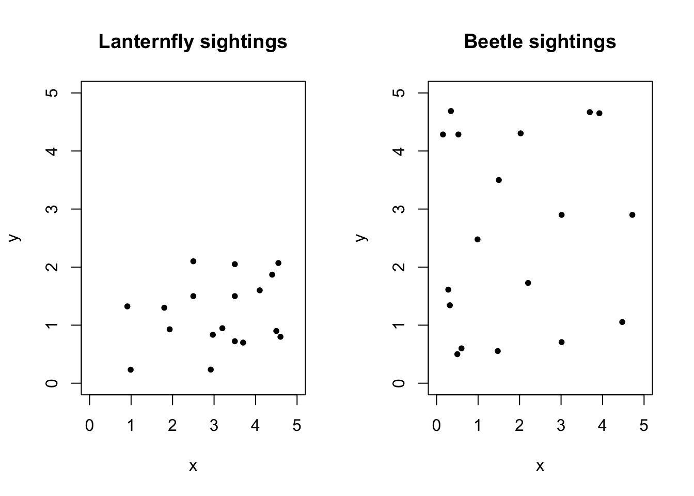
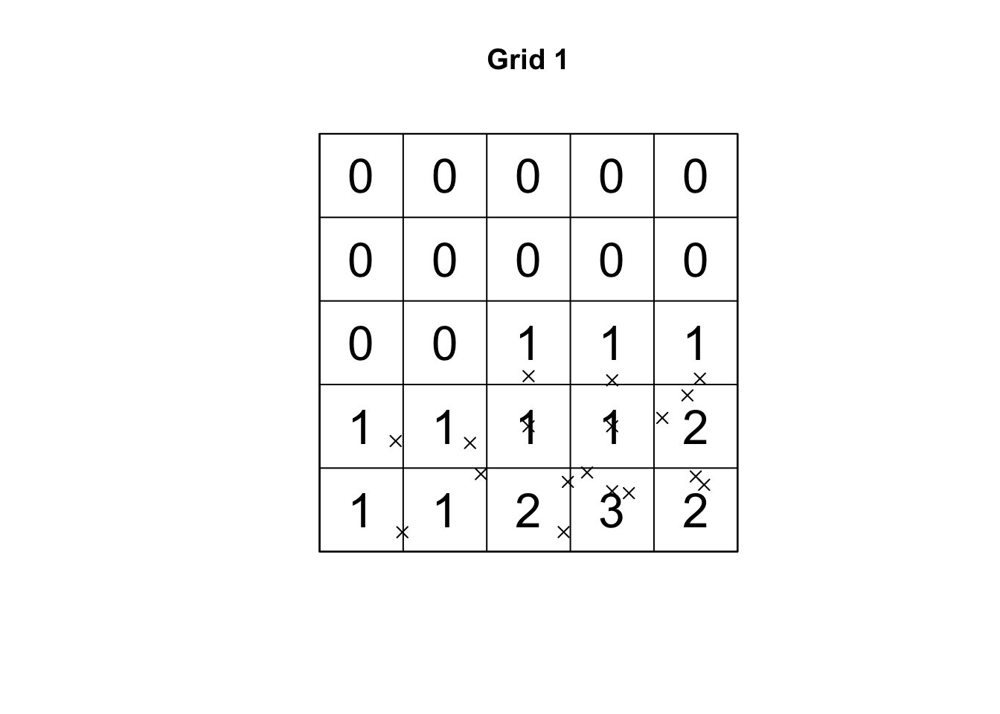
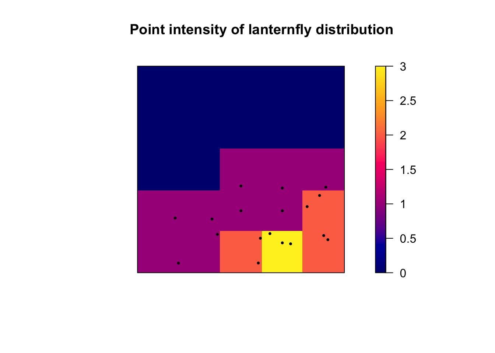
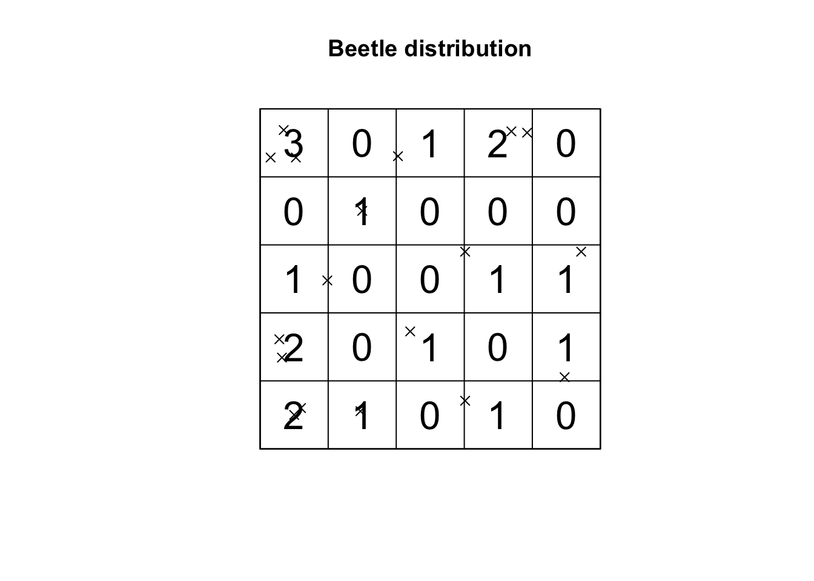
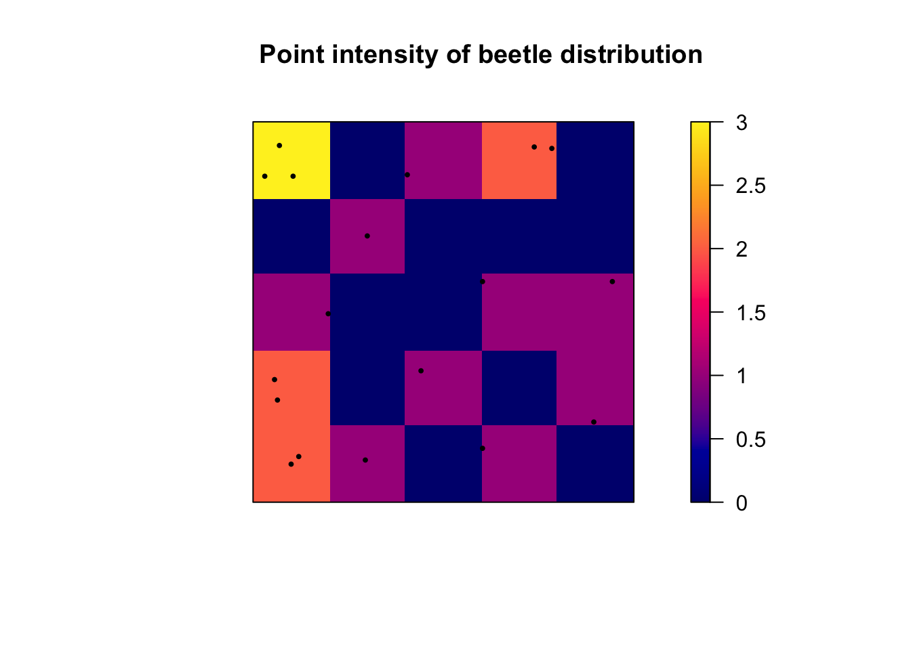

Chapter 4 TEST 1
4.1 Set up the data
lanternfly <- read.csv("./tmp1.csv")
beetle <- read.csv("./tmp2.csv")
par(mfrow=c(1,2))
plot(lanternfly,pch=20,main="Lanternfly sightings",xlim=c(0,5),ylim=c(0,5))
plot(beetle,pch=20,main="Beetle sightings",xlim=c(0,5),ylim=c(0,5))
4.2 Lanternfly analysis
lanternfly.ppp <- as.ppp(lanternfly,c(0,5,0,5))
# Count the number of points
Q.counts <- quadratcount(lanternfly.ppp,nx=5,ny=5)
# we use the as vector command to convert the data from a spatial ppp object back to a normal number
Q.variance <- var(as.vector(Q.counts))
Q.mean <- mean(as.vector(Q.counts))
Q.VMR <- Q.variance / Q.mean
print(paste("VMR: " ,Q.VMR))## [1] "VMR: 0.986111111111111"plot(lanternfly.ppp, # I'm plotting the longleaf data
use.marks = F, # I didn't want it to plot the different circle sizes so i turned off marks
cex = 1, pch = 4, # point size and shape
main="Grid 1") # plot title
plot(Q.counts, add = TRUE, cex = 2) # Now I add Q on top.
plot(intensity(Q.counts, image=TRUE), main="Point intensity of lanternfly distribution", las=1) # Plot intensity raster
plot(lanternfly.ppp, pch=20, cex=0.6, add=TRUE) # Add points
## Warning: Some expected counts are small; chi^2 approximation may be inaccurate##
## Chi-squared test of CSR using quadrat counts
##
## data: lanternfly.ppp
## X2 = 23.667, df = 24, p-value = 0.9616
## alternative hypothesis: two.sided
##
## Quadrats: 5 by 5 grid of tiles4.3 Beetle analysis
beetle.ppp <- as.ppp(beetle,c(0,5,0,5))
# Count the number of points
Q.counts <- quadratcount(beetle.ppp,nx=5,ny=5)
# we use the as vector command to convert the data from a spatial ppp object back to a normal number
Q.variance <- var(as.vector(Q.counts))
Q.mean <- mean(as.vector(Q.counts))
Q.VMR <- Q.variance / Q.mean
print(paste("VMR: ", Q.VMR))## [1] "VMR: 0.986111111111111"plot(beetle.ppp, # I'm plotting the longleaf data
use.marks = F, # I didn't want it to plot the different circle sizes so i turned off marks
cex = 1, pch = 4, # point size and shape
main="Beetle distribution") # plot title
plot(Q.counts, add = TRUE, cex = 2) # Now I add Q on top.
plot(intensity(Q.counts, image=TRUE), main="Point intensity of beetle distribution", las=1) # Plot intensity raster
plot(beetle.ppp, pch=20, cex=0.6, add=TRUE) # Add points
## Warning: Some expected counts are small; chi^2 approximation may be inaccurate##
## Chi-squared test of CSR using quadrat counts
##
## data: beetle.ppp
## X2 = 23.667, df = 24, p-value = 0.9616
## alternative hypothesis: two.sided
##
## Quadrats: 5 by 5 grid of tiles